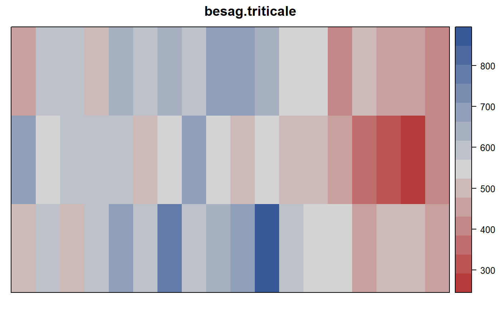
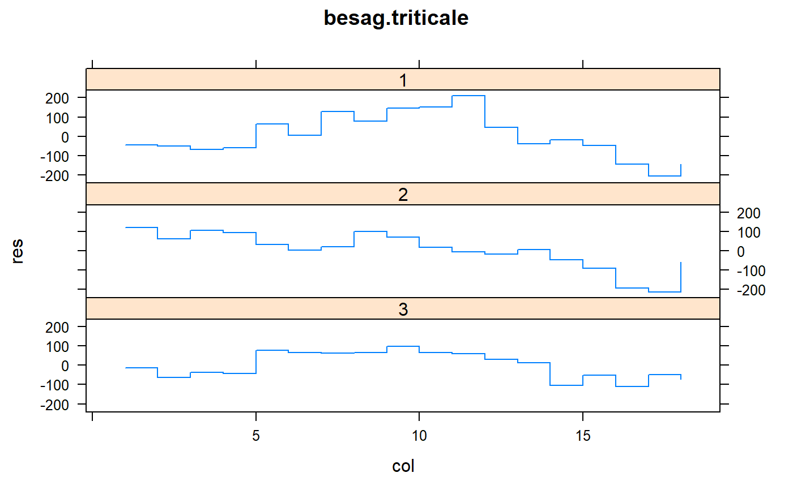

besag.triticale.RdFour-way factorial agronomic experiment in triticale
data("besag.triticale")
A data frame with 54 observations on the following 7 variables.
yieldyield, g/m^2
rowrow
colcolumn
gengenotype / variety, 3 levels
rateseeding rate, kg/ha
nitronitrogen rate, kw/ha
regulatorgrowth regulator, 3 levels
Experiment conducted as a factorial on the yields of triticale. Fully randomized. Plots were 1.5m x 5.5m, but the orientation is not clear.
Besag and Kempton show how accounting for neighbors changes non-significant genotype differences into significant differences.
Julian Besag and Rob Kempton (1986). Statistical Analysis of Field Experiments Using Neighbouring Plots. Biometrics, 42, 231-251. Table 2. https://doi.org/10.2307/2531047
None.
# \dontrun{ library(agridat) data(besag.triticale) dat <- besag.triticale dat <- transform(dat, rate=factor(rate), nitro=factor(nitro)) dat <- transform(dat, xf=factor(col), yf=factor(row)) libs(desplot) desplot(dat, yield ~ col*row, # aspect unknown main="besag.triticale")# Besag & Kempton are not perfectly clear on the model, but # indicate that there was no evidence of any two-way interactions. # A reduced, main-effect model had genotype effects that were # "close to significant" at the five percent level. # The model below has p-value of gen at .04, so must be slightly # different than their model. m2 <- lm(yield ~ gen + rate + nitro + regulator + yf, data=dat) anova(m2)#> Analysis of Variance Table #> #> Response: yield #> Df Sum Sq Mean Sq F value Pr(>F) #> gen 2 68245 34123 3.4115 0.04174 * #> rate 1 31344 31344 3.1338 0.08346 . #> nitro 1 5547 5547 0.5546 0.46032 #> regulator 2 36612 18306 1.8302 0.17212 #> yf 2 34756 17378 1.7374 0.18757 #> Residuals 45 450098 10002 #> --- #> Signif. codes: 0 '***' 0.001 '**' 0.01 '*' 0.05 '.' 0.1 ' ' 1# Similar, but not exact, to Besag figure 5 dat$res <- resid(m2) libs(lattice) xyplot(res ~ col|as.character(row), data=dat, as.table=TRUE, type="s", layout=c(1,3), main="besag.triticale")libs(asreml) # asreml4 # Besag uses an adjustment based on neighboring plots. # This analysis fits the standard AR1xAR1 residual model dat <- dat[order(dat$xf, dat$yf), ] m3 <- asreml(yield ~ gen + rate + nitro + regulator + gen:rate + gen:nitro + gen:regulator + rate:nitro + rate:regulator + nitro:regulator + yf, data=dat, resid = ~ ar1(xf):ar1(yf))#> Model fitted using the gamma parameterization. #> ASReml 4.1.0 Mon Jan 11 17:07:52 2021 #> LogLik Sigma2 DF wall cpu #> 1 -177.197 8485.373 32 17:07:52 0.0 (1 restrained) #> 2 -170.008 6592.311 32 17:07:52 0.0 (1 restrained) #> 3 -165.648 8290.072 32 17:07:52 0.0 #> 4 -165.203 13100.375 32 17:07:52 0.0 #> 5 -165.198 12237.087 32 17:07:52 0.0 #> 6 -165.198 12425.594 32 17:07:52 0.0wald(m3) # Strongly significant gen, rate, regulator#> Wald tests for fixed effects. #> Response: yield #> Terms added sequentially; adjusted for those above. #> #> Df Sum of Sq Wald statistic Pr(Chisq) #> (Intercept) 1 1283427 103.289 < 2.2e-16 *** #> gen 2 908222 36.546 1.159e-08 *** #> rate 1 105412 8.483 0.003584 ** #> nitro 1 275 0.022 0.881825 #> regulator 2 232696 9.364 0.009262 ** #> yf 2 3787 0.152 0.926634 #> gen:rate 2 1383 0.056 0.972564 #> gen:nitro 2 30994 1.247 0.536019 #> gen:regulator 4 37599 0.756 0.944186 #> rate:nitro 1 1484 0.119 0.729610 #> rate:regulator 2 49772 2.003 0.367366 #> nitro:regulator 2 41220 1.659 0.436342 #> residual (MS) 12426 #> --- #> Signif. codes: 0 '***' 0.001 '**' 0.01 '*' 0.05 '.' 0.1 ' ' 1## Df Sum of Sq Wald statistic Pr(Chisq) ## (Intercept) 1 1288255 103.971 < 2.2e-16 *** ## gen 2 903262 72.899 < 2.2e-16 *** ## rate 1 104774 8.456 0.003638 ** ## nitro 1 282 0.023 0.880139 ## regulator 2 231403 18.676 8.802e-05 *** ## yf 2 3788 0.306 0.858263 ## gen:rate 2 1364 0.110 0.946461 ## gen:nitro 2 30822 2.488 0.288289 ## gen:regulator 4 37269 3.008 0.556507 ## rate:nitro 1 1488 0.120 0.728954 ## rate:regulator 2 49296 3.979 0.136795 ## nitro:regulator 2 41019 3.311 0.191042 ## residual (MS) 12391 # }